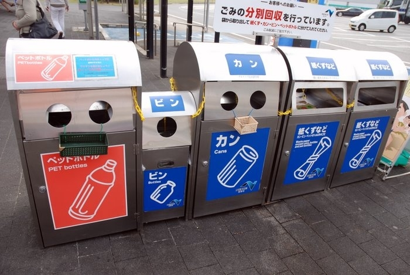

7. Сортировка мусора

Виды мусорок
Большинство районов Японии имеют общий пункт приема мусора. В стране существует целый ряд правил касательно того, как правильно упаковывать мусор для его погрузки и дальнейшей переработки. Эти правила могут различаться в разных муниципалитетах. Самое распространенное общее требование - мыть и сминать пластик, который подлежит вторичной переработке. В каждом районе назначается доброволец, который следит за тем, чтобы жители района соблюдали правила. Этих людей принято побаиваться, потому что они могут злоупотреблять властью. Если вы недостаточно прилежно выполняете правила подготовки мусора, они могут сделать замечание и публично раскритиковать ваши навыки. Районный “мусорный надзиратель”, как правило, имеет хорошие связи и может распустить о сплетни о грязнуле.